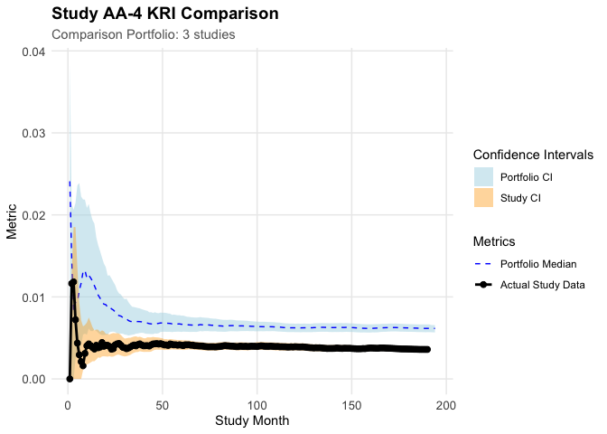

Overview
{gsm.studykri} provides a new approach for calculating KRI lower and upper limits on study-level for quality monitoring in clinical trials. The method uses bootstrapping to calculate confidence intervals for a given study over-time. The confidence intervals can then be used to compare the study-level KRI against a fixed expectation or against the confidence intervals and KRI values over time of one or more reference studies. The bootstrapping method resamples a new set of sites with replacement from the original study data set.
Example: Days on Study
library(dplyr)
#>
#> Attaching package: 'dplyr'
#> The following objects are masked from 'package:stats':
#>
#> filter, lag
#> The following objects are masked from 'package:base':
#>
#> intersect, setdiff, setequal, union
library(gsm.core)
library(gsm.kri)
library(gsm.studykri)
# Load raw data from clindata package
lRaw <- list(
Raw_AE = clindata::rawplus_ae,
Raw_SUBJ = clindata::rawplus_dm
)
# Simulate portfolio with 4 studies, AA-4 oversampled for low AE counts
lPortfolio <- SimulatePortfolio(
lRaw = lRaw,
nStudies = 4,
dfConfig = tibble(
studyid = c("AA-1", "AA-2", "AA-3", "AA-4"),
nSubjects = c(500, 750, 150, 200),
strOversamplDomain = rep("Raw_AE", 4),
vOversamplQuantileRange_min = c(0, 0, 0, 0),
vOversamplQuantileRange_max = c(1, 1, 1, 0.75)
)
)
#> Filtered to 1016 subjects with Raw_AE records in 0.00-1.00 quantile range (1-31 records)
#> Filtered to 1016 subjects with Raw_AE records in 0.00-1.00 quantile range (1-31 records)
#> Filtered to 1016 subjects with Raw_AE records in 0.00-1.00 quantile range (1-31 records)
#> Filtered to 773 subjects with Raw_AE records in 0.00-0.75 quantile range (1-6 records)
# Calculate site-level counts by month using days on study as denominator
# Pass subjects as denominator with start and end dates to calculate person-days
dfInputDays <- Input_CountSiteByMonth(
dfSubjects = lPortfolio$Raw_SUBJ,
dfNumerator = lPortfolio$Raw_AE,
dfDenominator = lPortfolio$Raw_SUBJ,
strStudyCol = "studyid",
strGroupCol = "invid",
strGroupLevel = "Site",
strSubjectCol = "subjid",
strNumeratorDateCol = "aest_dt",
strDenominatorDateCol = "firstparticipantdate",
strDenominatorEndDateCol = "lastparticipantdate"
) %>% tibble()
# Aggregate to study-level cumulative KRI by month
dfTransformed <- Transform_CumCount(
dfInputDays,
nMinDenominator = 25,
vBy = c("StudyID")
) %>% tibble()
# Generate bootstrap resamples at site-level (1000 iterations)
df_Analyzed_Bootstrap_Site <- dfInputDays %>%
Analyze_StudyKRI(nBootstrapReps = 1000) %>%
tibble()
# Aggregate each bootstrap iteration to study-level
df_Analyzed_Bootstrap_Study <- df_Analyzed_Bootstrap_Site %>%
Transform_CumCount(
nMinDenominator = 25,
vBy = c("StudyID", "BootstrapRep")
) %>% tibble()
# Calculate 95% confidence intervals from bootstrap distribution
df_Bounds <- Analyze_StudyKRI_PredictBounds(
df_Analyzed_Bootstrap_Study,
vBy = c("StudyID"),
nConfLevel = 0.95
) %>% tibble()
# Calculate reference portfolio bounds from studies AA-1, AA-2, AA-3
# Reference bounds equalize site counts across studies for fair comparison
df_Bounds_Ref <- dfInputDays %>%
Analyze_StudyKRI_PredictBoundsRefSet(
vStudyFilter = c("AA-1", "AA-2", "AA-3"),
nBootstrapReps = 1000,
nConfLevel = 0.95,
nMinDenominator = 25
) %>% tibble()
#> Resampling with minimum group count: 71
# Plot AA-4 KRI vs reference portfolio confidence intervals
Visualize_StudyKRI(
dfStudyKRI = dfTransformed,
dfBoundsRef = df_Bounds_Ref,
dfBounds = df_Bounds,
strStudyID = "AA-4"
)